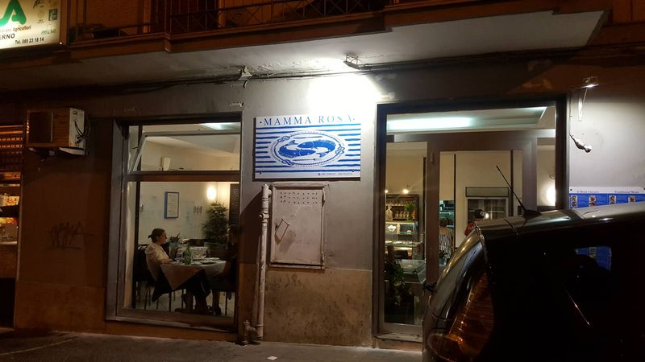
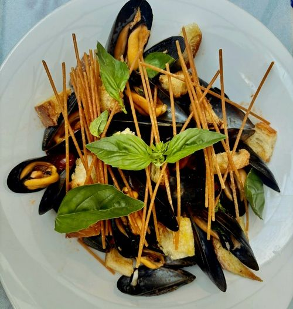
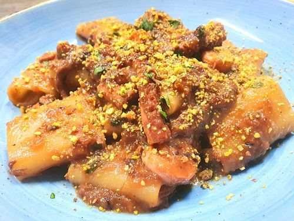
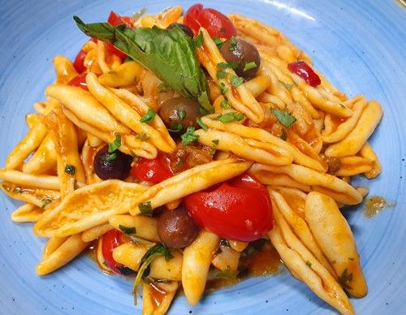
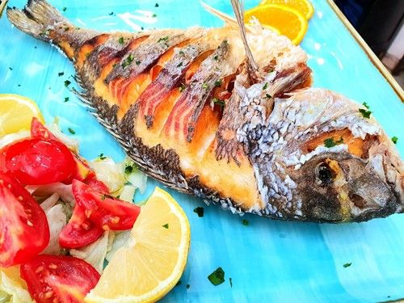

Titolo Piatto
Descrizione del piatto...
Una storia di passione culinaria, ricette tramandate nel tempo e materie prime d'eccellenza provenienti direttamente dal nostro golfo.

Il Ristorante Mamma Rosa nasce dal rispetto profondo per il mare e dalla dedizione verso la cucina tradizionale campana.
La nostra cucina celebra la freschezza degli ingredienti locali: dalle iconiche Alici di Salerno fritte con menta fresca e cipollina novella, alle storiche Cortecce alla Mamma Rosa e la leggendaria Zuppa di Cozze alla Salernitana.
"Il menù può variare ogni giorno in base al pescato giornaliero. Portiamo in tavola solo ciò che il mare ci dona di più fresco e genuino."
I piatti più amati dai nostri ospiti, preparati secondo tradizione con ingredienti selezionati.

MUST PROVAREMamma Rosa è custode della ricetta semplicissima ma di origini antiche: sole cozze freschissime con pomodorini, peperoncino, aglio, spaghetti fritti e basilico fresco.

PIATTO UNICOUn capolavoro con cipolla e polpo stufati insieme per 3 ore a fuoco lento, guarnito con croccante granella di pistacchio... Una vera poesia!

RICETTA DI FAMIGLIAPiatto storico tramandato dai genitori di Mamma Rosa: pasta fresca con olive nere, cipolla, capperi, pomodorini, Baccalà ed un pizzico di peperoncino.

SPETTACOLOOrata marinata con aglio e pepe, messa sottovuoto, poi fritta per intera... uno spettacolo croccante e ricchissimo di sapore.
Accompagna il pescato fresco con i sapori genuini dei vigneti salernitani e campani. I nostri vini della casa sono selezionati per esaltare ogni sfumatura di mare.
Fiano 65% + Malvasia Bianca 35%
Fresco, minerale e fruttato, perfetto per antipasti e crudi di mare.Aglianico 100% Paestum IGT
Intenso, strutturato e armonico, ideale per baccalà e grigliate di mare.Selezione del giorno
Vino al calice 7 € • Caffè in cialde (anche decaffeinato) 1 €Saremo lieti di accoglierti per farti vivere un'esperienza gastronomica autentica.
Per garantirti il massimo comfort ed il pescato più fresco, la prenotazione è obbligatoria.
Causa spazio ridotto in cucina non possiamo garantire l'assenza di contaminazioni.
Servizio a persona: 3,00 €
Contanti, Carte di Debito, Carte di Credito, American Express
Zone Wi-Fi gratis disponibili per i clienti